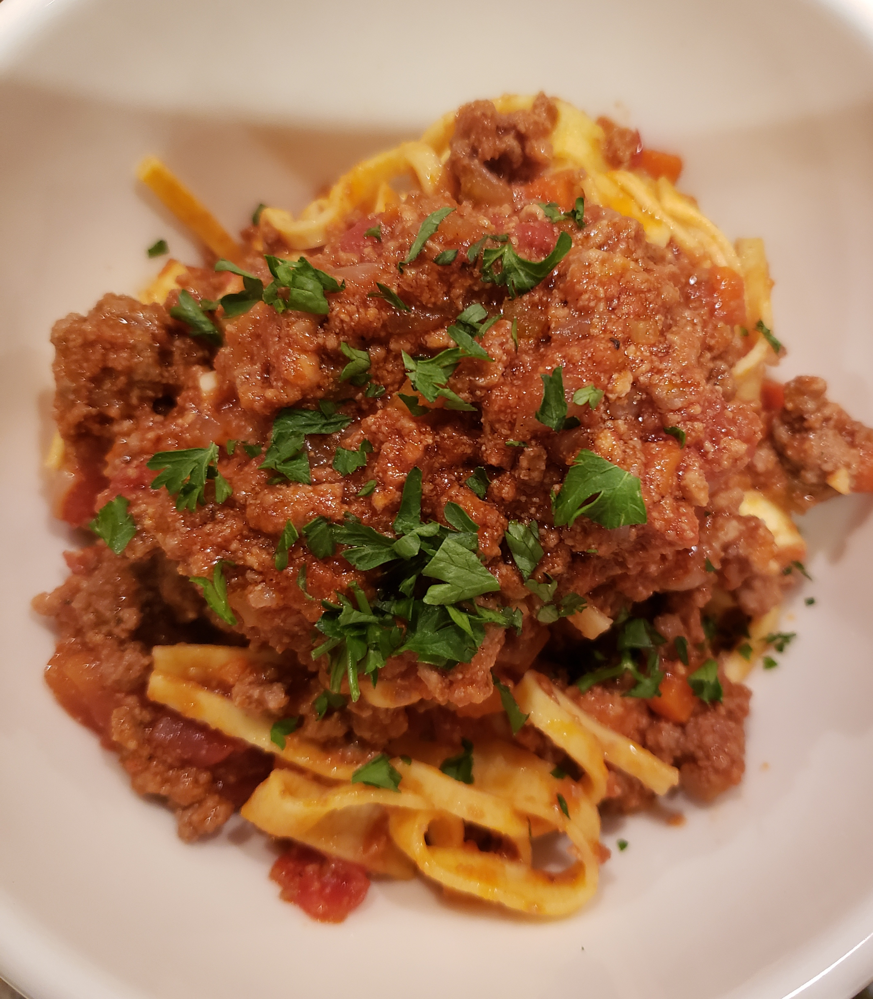

Bolognese Sauce

Description
This Bolognese sauce is dedicated to the late great Marcella Hazan.
She was considered the Julia Child of Italian food, and at a time when most Americans thought 'Bolognese'
was spaghetti sauce with chunks of hamburger, Marcella taught us just how magnificent this meat sauce could be.
I like to toss it with some mezzi rigatoni and serve it with a little grated Parmesan cheese and a sprinkle of parsley.
Ingredients
- 2 tablespoons butter
- 1 tablespoon olive oil
- 1 cups finely diced onion
- ½ cup finely diced celery
- ½ cup finely diced carrot
- 1 pinch salt
- 1½ pounds ground beef
- salt
- freshly ground black pepper to taste
- 1 pinch cayenne pepper, or to taste
- ⅛ teaspoon ground nutmeg
- 1 ½ cups 2% milk
- 2 cups white wine
- 1 (28 ounce) can whole Italian plum tomatoes (preferably San Marzano)
- 2 cups water, or as needed
Steps
- Melt butter with olive oil in a large saucepan over medium heat; cook onion, celery, and
carrot with pinch of salt until onion turns translucent, about 5 minutes. Stir ground beef into
vegetables and cook, stirring constantly until meat is crumbly and no longer pink, about 5 minutes.
Season meat mixture with 1 1/2 teaspoon salt, black pepper, cayenne pepper, and nutmeg.
- Pour milk into ground beef mixture and bring to a simmer. Cook, stirring often, until most of the milk has evaporated and bottom of pan is still slightly saucy, about 5 minutes.
- Raise heat to medium high and pour white wine into ground beef mixture; cook and stir until white wine has mostly evaporated, about 5 more minutes.
- Pour tomatoes with juice into a large mixing bowl and crush them with your fingers until they resemble a slightly chunky sauce. Pour tomatoes into sauce; fill can with 2 cups water and add to sauce. Bring to a simmer.
- Reduce heat to low and simmer, stirring often, until mixture cooks down into a thick sauce, at least 3 hours but preferably 4 to 6 hours. Skim fat from top of sauce if desired. If sauce is too thick or too hot on the bottom, add a little more water. Taste and adjust seasonings before serving.